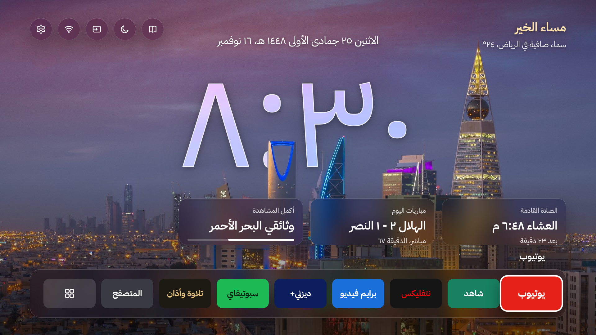

المظهر
«منظر وساعة»: الآفاق خلف الساعة الزجاجية
الشكلمنظر وساعة
الآفاق
الأفق المعروضيمين ويسار للاختيار

الرياض الحالي
حزم الآفاقآفاق السعودية، آفاق عالمية
بقاء كل أفق٢٠ ثانية
الأفق يتبع الوقتمفعّل
الأفق يتبع الطقسمتوقف
الساعةزجاجية خلف الصورة
كل الآفاق المختارة مصغّرة جاهزة في الذاكرة، فالمعاينة تتلاشى في ٢٠٠ م.ث بلا تحميل. الساعة لا تتحرك من مكانها بين الآفاق